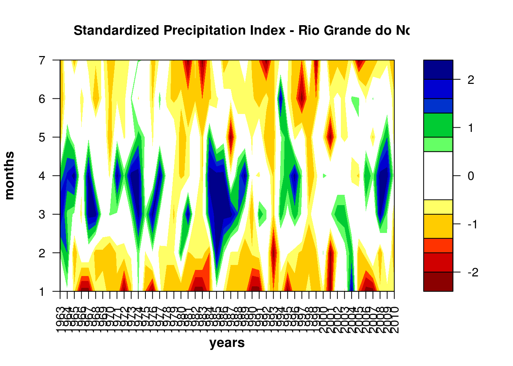
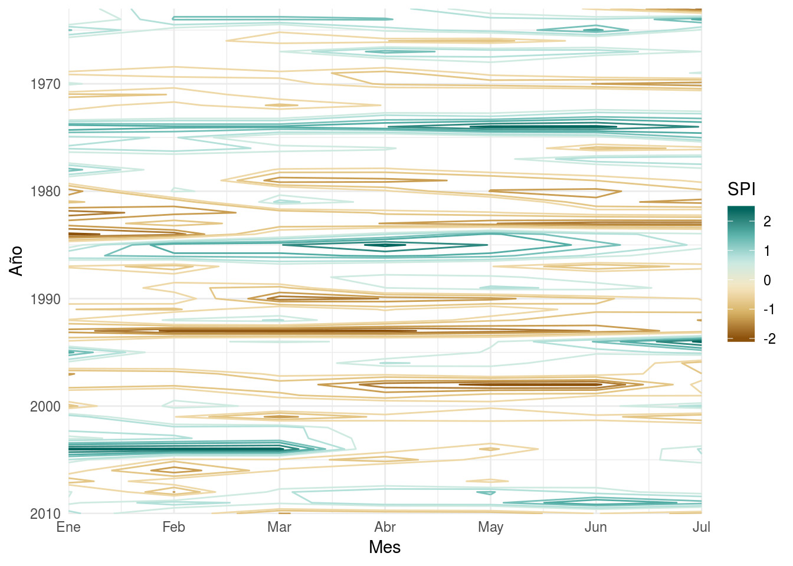
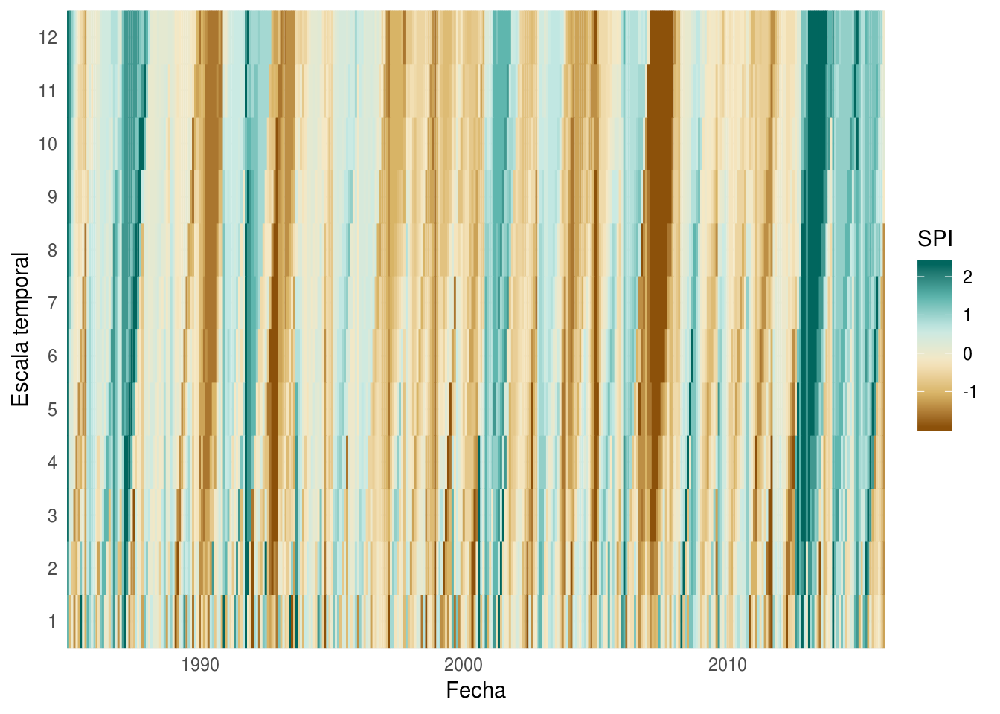

Cómo calcular el Índice de Precipitación Estandarizado en R
El Índice de Precipitación Estandarizado (SPI por Standarized Precipitation Index) es un índice para evaluar el estado de sequía o exceso de lluvia. La idea del SPI es tener una idea de qué tan probable es tener una cantidad de lluvia igual o menor. Valores altos del SPI están asociados con épocas muy húmedas mientras que valores bajos indican sequía.
En la práctica lo que se hace es la función de probabilidad acumulada a partir de los registros históricos y luego estimar la probabilidad para la cantidad observada en cada mes. Luego, esa probabildiad se convierte a su cuantil apropiado según una distribución normal estándar. De manera que, al final, el SPI indica cuántos desvíos estándar lejos de la media es la precipitación en cada mes.
En otras palabras, a grandes razgos:
spi <- qnorm(ecdf(precipitacion)(precipitacion))Algunos detalles extra:
antes se suele aplica un promedio móvil para capturar las variaciones de precipitación en determinadas escalas temporales.
el SPI calculado de esta manera da casos con precipitación tan extrema que R tira \(\pm \infty\). Entonces hay que rellenar esos datos de manera que el desvío etándar de toda la serie siga siendo 1 y luego restar la media para que quede centrado en 0.
En R existe un paquete llamado spi, pero analizando el código fuente de spi::spi, me parece que tiene algunos bugs importantes que hacen que su resultado no sea fiable. Aparentemente una traducción de un código de FORTRAN o algún otro lenguaje de bajo nivel, en un bloque if en el que debería transponer la matriz de datos, en realidad resulta una matriz con sólo 3 columnas.
for (i in 2:ncolumn) {
if (i == 2) {
data_aux1 = rbind(t(data[i - 1, ]), t(data[i, ]))
}
else {
data_aux = rbind(data_aux1, t(data[i, ])) # acá está el problema
}
}Siguiendo lo que hace el for, se ve que al final el data_aux es una matriz transpuesta pero sólo de las columnas de data 1, 2 y ncolum. La matriz data_aux es la que luego se usa para estimar la función de probabilidad acumulada; en vez de hacerse sobre toda la serie, se hace sobre 3 años.
Además, el SPI debe estimarse para cada mes por separado de manera de filtrar cualquier ciclo estacional. Pero spi::spi hace el cálculo sobre todo junto. Esto explica por qué en el gráfico de ejemplo se ve un claro ciclo estacional que no debería estar ahí.
library(spi)
data(spi_data)
write.table(spi_data,file="spi.txt",quote=FALSE,row.names=TRUE)
spi::spi(7,"spi.txt",1963,2010,"Standardized Precipitation Index - Rio Grande do Norte State",1,"years","months")
Existe otro paquete, precintcon, que no parece tener esos problemas y además en vez de estimar la distribución de probabilidad acumulada, le ajusta una distribución Gamma, que es bastante usada para modelar precipitación. El problema, para mí, es que las funciones relacionadas con PSI sólo se pueden aplicar sobre data.frames enteros y con clases especiales. Yo prefiero trabajar con clases primitivas que sé lo que hacen y qué son y que brinden más libertad al usuario. En particular, prefiero datos que estén en formato tidy.
Pero entonces hay que armarse la función propia:
# Media movil
rollmean <- function(x, k = 3, na.rm = TRUE) {
lapply(k, function(e) .rollmean(x, e, na.rm = na.rm))
}
.rollmean <- function(x, k, na.rm ) {
i <- seq_along(x)
j <- i - k + 1
j <- ifelse(j <= 0, 1, j)
pp <- sapply(i, function (e) mean(x[j[e]:e], na.rm = na.rm))
}
# SPI
spi <- function(pp) {
norm <- qnorm(ecdf(pp)(pp))
# de http://www.cmc.org.ve/mediawiki/index.php?title=Herramienta_en_R_para_diagn%C3%B3stico
norm.fin <- norm[norm != Inf & norm != -Inf]
minimize <- function(x) (1 - sd(c(x, norm.fin)))^2
norm[norm == Inf] <- optimize(minimize, lower=0, upper=100)$minimum
return(norm - mean(norm))
}La razón por la cual hay 2 funciones de media móvil es que la primera está vectorizada en k, lo que significa que se puede hacer roll <- rollmean(x, 1:3) para obtener una lista con 3 medias móviles con distinto k.
Y listo. Para probar la función con los datos de spi, primero hay que tenerlos en un formato razonable.
library(data.table)
pp <- setDT(melt(spi_data, id.vars = "Months", variable.name = "year", value.name = "pp"))
pp[, year := as.numeric(substr(year, 2, 5))]
pp[, month.n := 1:7, by = year]
pp[, date := lubridate::ymd(paste0(year, "-", month.n, "-15"))]
pp <- pp[, .(date, pp)]
knitr::kable(head(pp))| date | pp |
|---|---|
| 1963-01-15 | 74.1 |
| 1963-02-15 | 155.2 |
| 1963-03-15 | 226.4 |
| 1963-04-15 | 186.7 |
| 1963-05-15 | 37.2 |
| 1963-06-15 | 23.6 |
Así, con una observación de precipitación para cada fecha, podemos calcular el SPI en una sola línea:
pp[, pp.roll := rollmean(pp, k = 3)]
pp[, SPI := spi(pp.roll), by = month(date)]
meses <- c("Ene", "Feb", "Mar", "Abr", "May", "Jun",
"Jul", "Ago", "Sep", "Oct", "Nov", "Dic")
spi.breaks <- c(-2.4, -2, -1.6, -1.3, -0.8, -0.5, 0.5, 0.8, 1.3, 1.6, 2, 2.4)
library(ggplot2)
ggplot(pp, aes(month(date), year(date))) +
geom_contour(aes(z = SPI, color = ..level..), breaks = spi.breaks) +
scale_color_distiller(name = "SPI",
palette = "BrBG", direction = 1) +
scale_x_continuous(name = "Mes", expand = c(0, 0),
breaks = 1:7,
labels = meses[1:7]) +
scale_y_continuous(name = "Año", expand = c(0, 0), trans = "reverse") +
theme_minimal()
Cabe aclarar que como los datos no cubren todo el año, en realidad el promedio movil no tiene sentido. Para probarlo voy a primero crear una serie de datos sintética con un ciclo anual.
pp2 <- data.table(date = seq.Date(as.Date("1985-01-01"), as.Date("2015-12-01"),
by = "1 month"))
set.seed(42) # ¡reproducible!
pp2[, pp := rgamma(.N, shape = 1, scale = 10*(cos((month(date) - 1)/11*pi*2) + 1))]Y ahora sí, calcular el SPI como se debe y para todas las escalas de tiempo que queramos.
pp2[, as.character(1:12) := rollmean(pp, 1:12)]
pp.long <- melt(pp2[, -"pp"], id.vars = "date", variable.name = "k", value.name = "pp")
pp.long[, k := as.numeric(as.character(k))]
pp.long[, SPI := spi(pp), by = .(month(date), k)]
ggplot(pp.long, aes(date, k)) +
geom_tile(aes(fill = SPI, color = SPI)) +
scale_fill_distiller(name = "SPI",
palette = "BrBG", direction = 1) +
scale_color_distiller(name = "SPI",
palette = "BrBG", direction = 1) +
scale_x_date(name = "Fecha", expand = c(0, 0)) +
scale_y_continuous(name = "Escala temporal", expand = c(0, 0),
breaks = 1:12) +
theme_minimal()